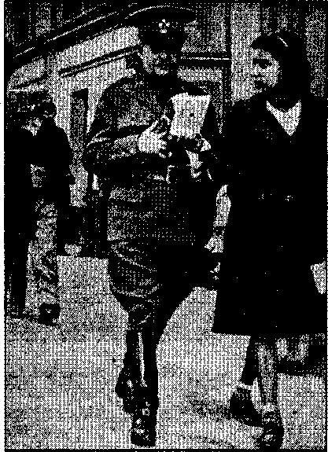
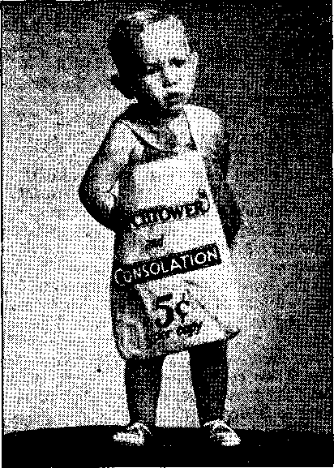

Contents
Where the Vatican Rales (Part 1)
Vassal States of Northern Europe
A Chinese View of Missionaries
Counsel by J. F. Rutherford
First English Translation of 1 Corinthians 13 19
The New Government
Who Is He That Shall Harm You? 21
Christmas Time in South Carolina
Minneapolis in U.S.A., Not in Germany 23
France — Petain’s Puppet State
Illinois-—Miles of New Books ‘
British Comment
One-eyed Attack upon Jehovah’s witnesses 29
Social Security in New Zealand
Published every other Wednesday by WATCHTOWER BIBLE AND TRACT SOCIETY, INC* 117 Adams St, Brooklyn, N. Y.. U. S. A.
Editor Clayton J. Woodworth
Business Manager Nathan H, Knorr
Five Cents a Copy a year in the United States |1.25 to Canada and all other countries
NOTICE TO SUBSCRIBERS
Remittances: For your own safety, remit by postal or express money order. When, coin or currency is lost in the ordinary mails,' ^here te jip redress. Remittances from countries other than below may be
made to the Brooklyn office, but only by International postal money order.
Receipt of a new or renewal subscription will bo acknowledged only when fequested. Notice of Expiration is sent with the journal one month before subscription expires, Please renow promptly to avoid, loss of copies. Send change of address direct to ue rather than to the post office. Your request should reach us at least two weeks before the date of issue with which it Is to take effect- Send your old as well as the new address. Copies will not be forwarded by the post office to your new address unless extra postage is provided by you.
Published also In Afrikaans, Bohemian, Danish, Dutch, Finnish, French, German, Greek, Hungarian, Japanese, Norwegian, Polish, Portuguese, Spanish, Swedish, UkTalnian>also special Australian edition in Hngllsh.
OFFICES FOR OTHER COUNTRIES
England Canada Australia South Africa
34 Craven Terrace, London, W, 2
40 Irwin Avenue, Toronto 5, Ontario 7 Beresford Road, Strathfield. N.S.W.
623 Boston House, Cape Town
Entered as second-class matter at Brooklyn, N. Y.( . under the Act of March 8* 187$,
Notanda
“The King of the North”
Describing the demon-ruled enemy of The Theocracy, The Watchtower of September 15, 1941, identifies the adulterous connections of the Boman Catholic organization:
Today (1941) “the king of the north” is easily identified as being represented in the so-called “Axis powers” composed of Greater Germany, Italy,, and the Roman Catholic Hierarchy, with chief offices at Vatican City. Here again politics and religion, or demonism, form a combination to rule and to keep the people in ignorance of Jehovah’s gracious provision for mankind.
The exposure of these chief religionists is done by Christ Jesus, and in this Jehovah’s witnesses have a part. (Isaiah 28:21) His witnesses thus employ the “sword of the spirit”, which is “quick and powerful, and sharper than any two-edged sword, piercing even to the dividing asunder of soul and spirit, and of the joints and marrow, and is a discemer of the thoughts and intents of the heart.” —Hebrews 4:12.
This exposure is quite terrible to the Hierarchy because it is not a work of man but a work of the Lord. Squirming under the searchlight of truth the devices used to defend herself are derided by the Lord. One such subtle method employed is the constant mourn of ‘terrible persecutions of the Catholics by the Nazis’. The Hierarchy continues to hand to the American people that myth, in spite of the fact that travelers to Germany, both Catholic and Protestant, unanimously affirm that persecution is limited to those who do not find Nazism commendable. The Catholic Church, as witnessed by the declaration of the bishops of Fulda, is loud in its acclaim of the Fuehrer and his bloody aggressions. It therefore follows that Hitler does not find it expedient or necessary to put any obstacle in the path of this form of demon-worship.—Elton Groves.
“And in His name shall the nations hope.”—Matthew 12:21, A. R.V.
Volume XXI fl Brooklyn, N.Y., Wednesday, December 34, 1941 Number 501
(In Two Parte—Part 1)
PRIESTS and prelates of the Roman Catholic Church are often reported by the American press as making statements to this effect:' “The condition of the world today is caused by the breaking away of England, Russia and the Americans from the Mother Church” The [Catholic] Universe, of London, even while Britain was engaged in a life-and-death struggle with the allies of the pope, was bold enough to say that England’s best interests, in their opinion, lay with the Catholic bloc of Europe. Catholic Bishop Hunt, in a sermon “at the consecration of Monsignor James J. Sweeney” as bishop of Honolulu, put it this way: “Bishop Hunt criticized the Russian church, the Lutheran church in Germany, the Anglican church in England and Protestant churches for failing to ‘return to our Lord and His church’.” (San Francisco Call-Bulletin) It is definitely shown that Hitler, as the ally of the pope, is determined to undo the work of the Protestant Reformation which was recognized by the Treaty of Westphalia in 1648 at close of the Thirty Years’ War.
[See Notanda, page 2.—Ed,]
At the same time that the newspapers are filled with the Catholic complaint about ruthless Nazi ‘desecrations’ comes the pope’s ‘polite no’ to Roosevelt’s request that he declare the war against the Nazis a ‘just war’. If there were any semblance of persecution of the Catholic Church, Roosevelt’s request for a Papal dictum outlawing the Nazis would offer the Vatican a golden opportunity for reprisal. If the Nazis had actually been fighting against the Romanists, here was the chance to square accounts by setting the Catholic world against Hitler.
Not only did the pope refuse, but one of his reasons for refusing is exceedingly significant: “The United States and Britain have doctrines, interests and political aims of their own; the Holy See has doctrines, interests and political aims of its own.” These opposing aims “do not and cannot meet”. (Vancouver Daily Province, September 17, 1941, um der headline, “ ‘No Just War,’ Pope’s Reply to Roosevelt”) The same dispatch contains this bit of humor: “In Vatican circles it is being said that the President asked' too much and that the Pope was placed in an impossible position.”
It was indeed a tough spot for the pope. For several years he had been howling about Nazi persecutions of the Catholic Church in Germany and now he was offered the opportunity to punish the Nazis. His answer was a ‘polite no’. For a bad moment his double-faced policy seemed in danger of discovery. He certainly could not afford to throw his Nazi allies overboard by virtually declaring a Catholic war on them. He hadn’t meant the Americans to get so worked up over those Nazi persecution stories that he had forced the newspapers to publish. It was really outrageous that the stupid Americans, whom the Vatican had been using for suckers so many years, should put the astute pontiff in such an awkward, “impossible position.”
The Tinies-Heraid (September 20, 1941) indicates how the pinch may have been rendered even more painful: “Some papers say Taylor mentioned to the Vatican the inconveniences that might be experienced if, under certain conditions, the revenue now received by the Vatican from America should not be forthcoming.” That was indeed an unpleasant contingency to consider. Then the thought naturally occurred to Eugenio that the way Hitler was destroying equipment he would be needing plenty of money and if the United States did not supply it, via the Holy See, things might not sit so well between himself and the Fuehrer,
However, it was more embarrassing than serious. He would still keep the Americans hoping for support, meanwhile backing Hitler to grab Russia before the winter. What a wonderful happy hunting ground he would have in what was left of Russia, which he could now monopolize in the manner in which the Greek Catholics had done under the czar. He dismissed the whole American incident in a reverie of anticipation.
Meanwhile the day of the Lord’s reckoning with the Hierarchy approaches.
The public press does not dare to analyze the maneuvers of. the Vatican and denounce the evident hypocrisy. Instead the press continues to peddle deceptive propaganda at the instance of Papal agents. Her record of 1500 years is ignored. It is not possible that news commentators who are astute enough concerning general information should never have heard of the dismal deeds of Catholicism that have blackened fifteen centuries.
Perhaps a few who have been reared in the darkness of parochial schools are really ignorant. But the usual attitude of the editors and staff writers seems to be this: The Hierarchy is too strong to buck, so we had best pander her wares. Witness the great write-ups and spreading pictures of skirted men and costumed women performing senseless “rites”, accorded nothing but praise from the pandering press. According to Webster one of the meanings of “pander” is: “To procure for others the means of gratifying
lust.” This fits the case well, because the Bible describes the leading religious institution as a harlot. (Isdiah 23:16, Douayj Revelation 17:5,9; see also book Enemies, Chapter VI) Consequently the press acts as her procurer. The language of the bawdyhouse is the only fitting phrase to describe this abominable servility. '
■ We read much about the Hierarchy’s demand for religious freedom in Russia. Westbrook Pegler points out just why the priests and prelates got into difficulties in Russia in the first place.
The Russians, we are told, are deeply religions as a people, but we were told also that under the Czar they were ignorant, loutish and docile victims of exploitation and superstition. Their clergy, by all accounts that came to us in those days, were not faithful to their sacred responsibilities and, if this version be true, were largely responsible for the decline of religious practice, although apparently not the obliteration of religious faith. I wish some of those authorities who have been taking part in the recent discussion would frankly go into that phase of the question because, if the restoration of religious freedom means only the revival of such a system, that obviously is a project in which Americans will not want to involve themselves.
Moreover, religious monopoly is not religious freedom, although freedom is commonly said to exist in countries which protect and subsidize one official or favored religion or sect to the exclusion of others. Religion apparently is thoroughly at home under the dictatorial form of government, provided that the dictator tolerates one or more religions, and we of the United States have no mission to assist in the restoration of religious freedom under any dictator.
. . . Clergymen have a terrible responsibility and are guilty of a terrible wrong when they undermine the confidence of people in their government by giving aid and comfort to dishonest public officers. We have areas in the United States in which men of the church have openly sided with corruptioneers, or with the rich and powerful, and it is a fact which would be laughable if it were not so solemn that any man who attempts to preach and practice Christianity would be scorned id any Christian American neighborhood. There is neither Black Belt nor Ghetto in Heaven but the Christian American can’t bring himself to practice the brotherhood of man on earth. (“Fair Enough,” in New York World-Telegram, October 9, 1941)
Turning away from the Russian and American situation let us briefly review the reasons for the troubles of the priesthood in Mexico.
During the three hundred years of the Spanish regime in Mexico, the executive head of the government was the Vice-King, or Virrey. ... In political life as in ecclesiastical life, the Church of Rome was omnipotent, and a majority of the Virreys were ecclesiastical officials. . . . Throughout the entire colonial period, terminating with the independence, no matter what interest the Spanish government itself might take in the protection of the peasants, the colonial government worked solely in the interests of the big landowners, of whom the Church itself was the chief.
The society was divided into three strata. At the top stood the privileged Spanish class of big land-owners, comprising the [Catholic] Church and Aristocracy. This class dominated the entire life of the country, and used the government and army merely as a means to maintain their supremacy. Far below them lay the small and insignificant middle class. . . . Far below the middle class, and in the*deepest misery and degradation, were the toilers of the soil—the natives, Aztecs, Toltecs, Mayas, and other allied races—immensely outnumbering the two other classes, but powerless in their ignorance and disorganization. . . . [Page 19, The Mexican People: Their Struggle for Freedom, by L. Gutierrez de Lara and Edgcumb Pinehon; copyright, 1914, and published by Doubleday Page & Co., Garden City, New York]
The results of the rule of the pope is graphically described therein on page 25:
Much has been written anent the paternalism of the [Catholic] Church. “They made the natives toil for them without payment,” says Bancroft. (Vol. 13, p. 704) The whole history of the period, even when recorded by Catholic writers, goes to show that the [Catholic] Church exceeded the Aristocracy and the military in her cruel and cynical treatment of the unhappy native peons. For these toilers of the soil there were no schools. If they fell ill—and that was often enough—-there were for them but two or three miserable hospitals in all Mexico, and in these they did but only die of starvation and mistreatment. Their sole pastimes and recreations were the Church festivals, where under cajolement or threat they yielded up their scanty savings to the priest for mass-payments. If tthey escaped from the priests with a few centavos, there were still the drinking places, also kept by the priests, where the vilest liquor was sold, and the peons sank in the mire at the end of their long-anticipated holiday, robbed and drugged.
Not only did the clergy enjoy this vast economic and spiritual power, but also certain privileges which protected them from the reach of such civil law as there was at the time. These privileges, which were termed “fueros eclesiastieos”, exempted the priests, the friar, the nun, and the military from any retribution' at the hands of the civil courts for any crimes committed by them. On the other hand, offenses against the [Catholic] Church committed by civilians were punished with the utmost severity.
In this record, does anyone find the slightest vestige of opposition to the pope’s duly appointed representatives in Mexico? When the cry is heard from Catholic quarters, “Return the world to the rule of the pope and all will be well,” we have historical examples of that rule which should make it unnecessary to try it out again. When we hear the plea for religious freedom in Mexico we know what the Hierarchy* wants to have back: the yoke of serfdom.
The same conditions were responsible for the rebellion in Spain, except that the Franco “rebels” represented the Catholic Church interests, and were successful, through the help of Hitler and Mussolini, in reinstating the ousted Hierarchy. The stories that come from there now are even more dismal than that just depicted of Mexico. Starvation and despair stalk the land.
Canada Under the Pope
Papal agents are skillful in the art of seduction. They seduce men and nations. Canada has a government that is theoretically modeled after the system of England. The governor-general, appointee of the king of England, is merely a rubber-stamp head. Just as in the British government, the prime minister is the real head, and holds office through election, which1 is required every five years in any case, and may take place sooner if the cabinet falls by reason of disagreement and the consequent test vote. Canada’s Parliament is composed of a Senate and House of Commons. Each province also has local government headed by a lieutenant-governor [equivalent to our “governor” and pronounced “lef tenant”]. While this has the semblance of popular government, and, relieved of the Catholic bloc, might function as such, it is in practice operated by long-distance telephone from Vatican City.
In reality this is accomplished through the Quebec appointee, Lapointe, having the office in Mackenzie King’s cabinet of “Minister of Justice”. In order to have their support, the Province of Quebec, which is some ninety percent Catholic, and abjectly in the control of the bishops of the Roman Catholic Church, requires that Lapointe be allowed full license in the administration of Canada’s new Defense law. If King disagrees with Lapointe on any important decision, Lapointe can force a vote of confidence, that is, provoke a cabinet crisis, which calls for a new election. In the new election the Province of Quebec wields a mighty club. As they are solidly united and opponents are not, they can bargain beforehand as to to whom they will throw their support. No party can be elected without the support of Quebec. Although the Catholics do not form the majority in Canada, they form a large minority which is too great to be combated by any but the combined forces of all the other political elements, which can never come to agreement. It is the old adage “Divide and conquer” worked perfectly.
Ernest Lapointe,* therefore, rules Canada in the name of the pope. If the recommendation of the “Minister of Justice” (an office which exists in name only) is not accepted, it means that the government is in danger of overthrow and another party returned. In consequence, Lapointe invariably has his way, which is the way dictated by the bishops of Quebec. [*Died November 26, 1941]
Behind the dictatorship wielded by the Hierarchy of Quebec lies considerable history. When the English took Canada from the French the English governor of Quebec province (Lower Canada it was then) told the French people they could remain in Canada or return to France as they chose. (This occurred at the termii\ation of what in American history is called the “French and Indian War”, the high point of which was the surrender of Quebec after the battle on the Plains of Abraham. In this fight, which took place in 1759, both the English general Wolfe and the French general Montcalm were killed.) Therefore, acting on the choice offered them, the seigneurs, or French nobility, knights and soldiers practically all returned to Francd. There remained only the bishops and clergy to rule over the common people or “habitants”. The bishops, therefore, were permitted a wide-open field to organize the most unrestricted “church” autocracy.
We may now observe the results to those who have been lured by the promise that if the pope held complete sway ■ blessings would flow to the people. This is contrary to what the Bible declares: “When the wicked beareth rule, the people mourn.” A further glance at the conditions in Canada, just as in the other nations considered where the pope holds dominion, proves without question that
such promise of blessings is seductive, fraudulent, and contrary to the facts.
The French Canadians, most of whom live in the province of Quebec, are a most delightful people. They are also an ignorant and oppressed people. The reason is well expressed by a Canadian familiar with the plight of them.
The Quebec child is taught that he owes two allegiances, one to the government of the country, the other, the greater, to God. God is present in the earth in the person of the pope. The government of the pope affects the child’s morals, his education, his books, his radio programs, his sins, his prayers, his membership in any and every organization of any sort, his confessions, his marriage, his wife, his children, his labor unions, his clubs, his church, his knowledge of the Scriptures, his finances, his political vote, his status in the War, his military service, his death and burial, his years in “purgatory”, his longer years in more particular blazes, and possibly his entry into heaven, and hence his present conscience. On all these matters he is taught to accept the priest as the whole of the law and the prophets.
It is therefore easy to be seen what a warped individual the French Canadian becomes after some twenty years of priestly “education” and prohibitions. T|iis needy and benighted people are often referred to contemptuously by the English Canadians and by the Americans as ‘crudely anti-Britislr. (Life magazine was for a time barred from Quebec as a result of such an expose.) Let it be said that the French Canadians are antiBritish in effect, but not from choice. The blame is not theirs, and censure upon them is unfair. The throttle-grip of the Hierarchy makes paralytics of the descendants of old France.
True, they form the backbone of this “church” government, bear it up and support it. But they know nothing else. Their whole vision is blocked by the Catholic Church, its edifices and teachings. From infancy they learn to revere and fear it; and in maturity the superstition thus impregnated is far too
DECEMBER 24, 1941 strong for most to cast off. The "sin that doth so easily beset us”, religion, holds’ these people in bondage to fear. (2 Corinthians 4:4; Proverbs 29:25; He-■ brews 12:1) But the Lord is certain io release those of good-will among all na-tions.—Revelation 7:9.
The province of Ontario and the province of Quebec are comparable both in size and in population. Note then some of the fruits of Papal rule. There are 460 libraries in Ontario, only 26 in Quebec; the percentage of illiteracy is double in the latter; while permitted in Ontario, the sale of the Bible was prohibited by law in medieval Quebec. In times past English governors learned that every time the bishops were displeased Indian uprisings occurred; and hence the practice was adopted of first submitting the proposed measure to the local Hierarchy, and if frowned upon by the Catholic clergy the measure was dropped.
Today Cardinal Villeneuve, the “little pope” of Quebec, has facilitated this prelegislative inspection. Not satisfied with that, he even overawes the legislative body itself, by the erection and personal occupancy of a throne beside that of the lieutenant-governor of the province, wTho presides in the Quebec Legislative Assembly. Jewish and Protestant members are forced to bow to an idol (crucifix) situated just behind the twin thrones of Villeneuve and the lieutenant-governor, each time they cross the Legislative Chamber. This was contrived by Catholic ingenuity to take advantage of the custom of the floor that each member nod or bow to the chair when crossing from one section to another. The bishops have also caused the crucifix to be substituted for the British coat of arms in Quebec courts.
For more than two centuries Quebec has been a stumbling-block to Western progress. The city by that name, which is the present capital, was settled in 1608 by-Samuel Champlain. The Encyclopedia Americana adds a significant point: “The Jesuits came to the settlement in 1625,
7
and thereafter played a leading part in its history.” Under Louis XIV “a systematic effort began to make the polony the starting point of a French and Cath--olic empire which should embrace the whole of the continent,” This dream died with Montcalm, whose remains are “hallowed” in the Ursuline Convent.
Quebec was the base for British operations against America both in the Revolutionary War and the War of 1812. During the War between the States [the American Civil War] the pope maintained treacherous connections with the Confederacy, which had been officially recognized by the Vatican, through what was termed Jeff Davis’ “kitchen cabinet” in Montreal. After the assassination of Lincoln, Catholic conspirator John Surratt escaped through Quebec. Dr. Leo Cardinal wrote an article in The American Standard of June, 1931, (which was broadcast over WHAP) headlined “Says Jesuits Shielded Assassin of Abraham Lincoln—Pope, Jesuit General, Napoleon III Involved in Conspiracy”, in which appears this paragraph:
Surratt left for Canada disguised as an English tourist, and fled under the protection of a priest, Lc Pierre, who had the same name as the priest who had tried to “railroad” Father Chiniquy [friend of Lincoln] in 1856. As a matter of fact he may have been the same person. Le Pierre was canon of Bishop Bourget of Montreal. Surratt was hidden during several months in the care of Father Boucher, at St. Liboire, when the detectives searched for him in Montreal. In September of the same year, he was conveyed by two priests on board of the ship Peruvian, where he was introduced to the ship’s doctor, a Mr. McMillan, as McCarthy. On the high seas, Surratt confessed to Dr. McMillan, saying that “after the abduction of Lincoln had failed, they changed their plans and killed him.” [For the full account of the complicity of the Hierarchy in the death of Lincoln, see “Jesuit Destroyers”, in Consolation Nos. 579 and 580.}
Ever the foe of freedom, Quebec was to furnish a contingent of Zouaves to as-8 - .
sist the pope in fighting Garibaldi, the great Italian liberator. Her efforts in the first World War were reluctant as long as Italy fought against Germany.
From a country with such a heritage comes Ernest Lapointe. He holds both the offices of Canadian attorney-general and minister of justice. Long familiar with the corrupt system which has established an arrogantly wealthy priesthood upon a people reduced by the burden to log cabins and tar-paper shelters, Lapointe is adept at pleasing the bishops. That he is skillful at deception is proved by the fact that he forced the passage of an order in council making illegal “Jehovah’s witnesses” under the pretext of protecting the defense of Canada. The English members of the cabinet would have permitted a Parliamentary hearing upon the validity of the charge, but this was blocked by another order in council put through by Lapointe [now dead].
As a result Jehovah’s witnesses, the servants of the Most High God, are now “illegal” by Canadian law. This was the worst defense move Canada could have made. It puts them right in line for Jehovah’s Executioner; and so that fine commonwealth is ensnared by fear of man, —Proverbs 29: 25. .
. The local constabulary and the Royal Northwest Mounted Police are now engaged in the shameful work of hounding out people who have any publications by the Watchtower; submitting them to arrest and imprisonment and carrying on confiscation and book-burnings such as has not been known in an Englishspeaking country since “Bloody Mary” did the pope’s bidding in the sixteenth century. The fine group of men who did so much to bring law t® the wilderness and execute justice in the great northern wastelands are now reduced to breaking into Christian homes, tormenting women and children, and outraging every English tradition, all for the sake of the Papacy’s Lapointe. This is one of the fruits of Papal rule.—Elton Groves.
Canada
Mayor Houde’s Sudden Tumble
♦ Camilien Homie, several times mayor of Montreal, tried bucking the British Government on the conscription issue. He had expected a public trial, great public excitement, and probable release. Instead, he was grabbed in the night and run off to a barbed-wire internment camp where he will work as a laborer at 22c a day for the duration of the war. Instead of two hundred shirts, which he left behind, he now has two; instead of thirty suits of clothes, he now has one suit, with two pairs of pants; instead of fifteen overcoats he has one mackinaw. The only offset is that his salary as mayor continued for four months after he was locked up. No one knows where he now is except the Canadian Mounted Police. The Canadian people seem quite content for Mayor Houde to be locked up.
Church-State Union
♦ Church-State union is effective in London, Ontario, Canada, where religious instruction is now included in the regular program of modern public-school education. The doctrines taught are not stated, but are probably those of the United Church (2,017,375 communicants),Anglicans (1,635,615 communicants in Canada), or of some agreement with the other Protestant sects, of whom there are in Canada some 870,728 Presbyterians, 443,341 Baptists, and 394,194 Lutherans. The Roman Catholics (4,285,388 communicants in Canada) are not strong enough in Ontario to put their priests arid nuns in charge of religious instruction in the public schools of that province.
Indians Seeking Education
♦ Of the 118,000 Indians in Canada almost 19,000 are in school, which is an increase of 3,000 over the Indian school attendance of ten years ago. At present there are 367 Indian schools in operation.
DECEMBER 24, 1941
Eskimos Make Good Reindeer Keepers
♦ The Eskimos make good reindeer keepers, and, in time will probably become as proficient as the Laplanders. Many years ago the United States Government bought a herd of reindeer and shipped them into Alaska, where they have flourished tremendously. In 1935 the United States delivered 2,370 to the Canadian Government, and this herd now numbers about 8,000. In 1938 the Canadian herd was split, when 950 animals were separated from the main herd and driven 150 miles eastward to the Anderson river area. Gradually, reindeer are becoming established clear across the North American continent, to the benefit of all concerned.
Sixty-one Prison Breaks
♦ German prisoners of war confined in Canadian concentration camps are an active lot of men. They do road work, cut trails, and prepare their own food, which is the same as that of the Canadian army. Also, within a few months, there were 61 prison breaks, showung that their morale is high. Only one man got away, Baron Franz von Werra. He made his way across the ice-choked St. Lawrence river, was released by United States immigration authorities on bond to German consular officials. He jumped his bond immediately and went to Peru, and by this time is probably back in Germany telling them all about what an interesting time he had.
The Soldiers Want to Live
♦ The Canadian soldiers who go overseas want to live. The words of the Bible are the words of life, and so it is but natural that of late there has been a greatly increased demand for Bibles and Testaments, The soldiers are taking the books with them, and they are more generally given as prizes in schools than formerly.
“Sap’s Running” . .
♦ The last half of March and the first half of April constitute the maple sugar harvest of Canada and of states along the Canadian border. The year 1940 was . a year to be remembered in this regard, on account of the heavy snows, which make the sap run plentifully. A tramp to the woods on a mild spring day^ the aroma of escaping steam where the “sugaring off” is in process, sampling the hot syrup, and eating the sugar that has been allowed to harden on clean snow, are treats to be remembered from youth until the time the sap stops running in the veins.
The Aluminum Shutdown
♦ In the present world situation it is of marked interest that 300 men, asking the National Catholic Syndicate of Aluminum Workers to speak for them, could lock out 10,000 other workers, and seize the largest aluminum plant in the world, the Arvida, Quebec, works of the Aluminum Company of Canada, and cause a loss of four weeks’ production of what some consider the most essential war metal. It is of interest that no troops were sent, because the consent of the Quebec Provincial Government could not be obtained. For the reason, see pp. 7-8,
Mineworkers Object to Seaway
♦ American mineworkers object to the proposed seaway down the St. Lawr’ence, for the reason, as set forth, that the opening of the seaway would mean the end of shipments of United States coal to Canada. They think foreign coal could be let in by boat so as to undersell American coal in the .Canadian market.
Canada and Vichy
♦ The only part of the British Commonwealth of Nations that exchanges ambassadors with the French governtnent of Marshal Petain is Canada. The Vichy government broke off relations with Britain itself after the sinking, on July 5, 1940, of the French fleet at Mers~el-Kebir.
Standing at Armageddon
♦ A quarter of a century ago Theodore Roosevelt said, “We stand at Armageddon and battle for the Lord.” He was quite mistaken. The political battles of • his day were not the battle of Armageddon in any sense of the word. Now the high commissioner of Canada, Sir Gerald Campbell, uses the same words, and he also is quite mistaken. No battles being fought today are the long-promised battle of Armageddon. The Lord himself, and His heavenly host, will fight that battle, and in it every evil institution, visible and invisible, and every evil person, will be destroyed.
Sault More Important Than Suez
♦ How many people know that more freight, six times as much, moves through the Sault Ste. Marie Canal at certain seasons than moves through either the Suez Canal or the Panama Canal? The Sault carries quantities of iron ore and of wheat that run into the millions of tons every month the canal is open. Much of the iron ore for America’s blast furnaces is mined in Minnesota with a steam shovel.
The Investment in White Men
♦ The investment of Canadian Indians in white men varies from a return of $5 to $4 annually for every man, woman and child in the tribe, depending upon the treaty. In some instances the treaty payment party still travels by boat to the treaty grounds, but in these days the travel is mostly by air. Pontoon-equipped aircraft are usually used, which permits landings ori lakes and rivers in the vicinity of the Indian settlements.
Reindeer Gradually Increasing
♦ The herds of Canadian reindeer are gradually increasing and there are now three herds where at first there was but one. The purpose is to teach the Eskimos the reindeer business, so that they will be independent, and they are succeeding very well.
Vassal States of Northern Europe
Mocking the Goose-Steppers
♦ Northern Europe seems to have settled down to a policy of mocking the insane goose-steppers. It isn’t such a safe business'. A million men were yanked out of Poland to make munitions for them; 35,000 Belgians sent to Germany in a single month, 25,000 Luxemburgers, and 50,000 Dutch workers. In Norway the people smiled at the Nazi salute. Then they were forbidden to smile, or at least they were arrested. Finally, the Nazis had to abandon the salute. A German theatrical troupe came to Trondheim; the Norwegians bought tickets to fill the house and then they stayed away from the show,-to show their contempt. Expert electricians resorted to cutting electric cables all over Norway. Even the citizens do not know who are the guilty ones. In Belgium, when a German enters a restaurant all conversations cease until he leaves. When the Nazis made an edict in Antwerp that all Jews should wear an armlet, the whole town wore them; and the edict was canceled within 48 hours. Belgian schools had to dismiss their Jewish teachers. Many of the university professors were replaced by Germans. All school textbooks are being revised so as to speed up the throwback to the Dark Ages. German officials control the banks and the foreign currency and dispose of the contents of safety deposit boxes to suit their whims.
Tea for the Netherlands
♦ In celebration of Queen Wilhelmina’s birthday, British fliers dropped 75,000 two-ounce packages of tea in the Netherlands, a gift from the Netherlands Indies. So as to get the goat of the German rulers the packages were wrapped in orange-colored paper, and with orange confetti paper attached. Orange, the color of the Protestant House of Orange, is abhorred by Hitler and his fellow religionists.
DECEMBER 24, 1941
The Scorching of Tallinn
♦ The Russians are carrying out their policy of destroying everything as they move back from the invading armies of Germany. Correspondents tell of -what they saw in Tallinn, capital of what was once Estonia, but was in Russian hands for fifteen months before the German invasion. They compared notes and discovered that ninety percent of the people they had formerly known had been either exiled or executed. Before the city was captured the Russians cordoned off sections of the city at night, made house-to-house searches, and often arrested entire families, sending the women to northern sections of Siberia and the men to the southern sections. The trains that carried them were sometimes held for three or four days in the yards, but when a crowd gathered in response to their despairing cries for food and water, the crowd was arrested too. Men were arrested, told they were to be released, and they signed papers to that effect. After walking a few steps out of prison they were re-arrested, and when their wives called for them they were shown the signed documents and told that the men had been released and they did not know where they were. Meantime the men were on the way to Siberia. This information is gleaned from dispatches by Donald Day, copyrighted by News Syndicate Inc.
Having been trained for the priesthood, Stalin is beastly cruel, of course.
Den Koide Skulder
♦ Visitors to Copenhagen, Denmark, report that most Danes are wearing badges in their buttonholes. The badges either have the Danish colors or the colors of the British Royal Air Force or have the letters DKS, which stand for Den koi de Skulder, the cold shoulder. The intent of the badges is to irritate the Germans and make them feel that they are not welcome. '
11
IN THE empire of Big Business the thirst for power is the same as that of the politicians in the government business or the clergy in the ecclesiastical racket. Tn about two months’ time George Sei des, editor of In Fact, drew attention to the following important steps taken by the Big Boys to make sure that they would continue at the top of the pay roll:
One of the Du Pont crowd spent two weeks calling at all the Du Pont executive offices all over the country explaining that the major U. S. industries had agreed to curtail production for two months to break the back of organized labor by blaming them for the lessened output. The Du Ponts expected to make millions out of this little tour. Clever idea, eh? what?
Britain’s investment in India is $7,800,000,000, with an annual profit of about $900,000,000, which goes to British tories. The average per capita income in India today is from a penny to a penny and a quarter a day. The Halis, who slave an average of twelve years for debt, are paid 4-i annas (or 9c) a year.
After the Federal Trade Commission published 73 volumes showing how the public utilities with their $25,000,000 a year fund had corrupted newspapers, college professors, judges and others, the La Follette Civil Liberties Committee published 50 volumes of reports showing that Big Business, and not Labor, is generally to blame for all strike violence. The newspapers, regardless of truth or honesty, make it their business to always blame Labor, though they know that many employers hire spies, and bribe and arm thugs and supply them with gas.
World War No. 1 was kept going for three years longer than was necessary because Big Business in Britain and the United States did a land-office business with Germany via Sweden and Switzerland. British writers have admitted the truth of this statement, and it cannot be truthfully denied.
World War No. 2 has been greatly prolonged because diamonds are used for drilling, turning, polishing, machining gears and drawing wire. Germany has no diamonds, and had only six months’ supply on hand when the war started. She has been regularly supplied since by the British Diamond Syndicate, 8 Charterhouse street, London. It is not pleasant to record these facts, but it may do some good by helping honest people to see that God’s Kingdom is the only hope of man.
Standard Oil has regularly supplied both sides with oil and gasoline. Tankers and submarines come to Teneriffe, in the Canary Islands, for their gasoline, and sometimes there are as many as eight German and Italian tankers there at one time -waiting to load cargoes. U. S. shipments to Spain run around 300,000 barrels monthly; and as Spain has almost no cars in operation (gas is $1.50 a gallon and rationed), the oil obviously goes to Germany and Italy. Standard believes in “all out” to make money while the making is good. British and Norwegian ships, as well as U. S. ships, assist in getting the oil to Spain, and thus to Germany and Italy. This is appropriate because it was Britain and the United States that helped Germany and Italy to destroy the Spanish Republic, and thus made this avenue of trade possible.
The Mellon gang is of the same stripe as Standard Oil. They saw to it that Germany got all the aluminum she wanted, but restricted Britain, France and the United States. These birds should hire Whitney, the ex-president of the New York Stock Exchange, to give them some of his famous lectures on honesty and patriotism. The pretense that such dollar-a-year men as these are true Americans is sickening.
The Businessmen’s Church
♦ Ebeling that the several hundred different kinds of religion being sold in Los Angeles are not sufficient, a group of something over thirty prominent businessmen organized what they call “The Businessmen’s Church”. The idea is to meet every Monday evening at eight o’clock, to encourage other businessmen to take more interest in religion. The music will be by professionals, and an Episcopal rector will provide “a sermon strictly religious in character”. The purpose of the new church is to “provide a religious expression and inspiration for those who attend” and to revitalize “religious” standards in business. Just a suggestion here. How would it do for the rector to start off by telling the truth, the whole truth, and nothing but the truth, about the “torment” business? “Purgatory,” he might explain to the businessmen, is a fraud and a racket of the worst kind. Then there is the old-fashioned but exploded religious idea about hell. The truth on that subject would be mighty interesting also. But if the dominie told the truth on those subjects not a man in the group, if he is honest, would give the cause of religion another red cent. An undertaker is back of this new “church” racket.
Drug Clerks in Spy Times
♦ No doubt spies are operating in the United States, and quite possibly one of them, representing himself as a physician, telephoned a prescription to two Los Angeles drug stores. There were four ingredients. The first drug clerk put three of the ingredients together and then gingerly undertook to add the fourth with a medicine dropper. The prescription blew up, but did not harm him. He telephoned the facts to his employers, and they discovered the same prescription in process of being filled at another store. Either one of them, if
DECEMBER 24, 1941
completely filled, would probably have leveled the store to the ground.
“The World’s Oldest Mother”
♦ The San Francisco Chronicle published a picture of Mrs. Sylvia Hoover, claiming that when she died, recently, at Alameda, California, at the age of 115, she was “the world’s oldest mother”. She was born a slave, and was freed by Lincoln’s Emancipation Proclamation. She was survived by 9 of her 12 children, 35 grandchildren and 79 great grandchildren. Her husband had been dead 47 years. He was the first freed slave to own land, and was a justice of the peace.
Japanese in Hawaii
♦ Forty percent of the population of Hawaii is Japanese. They7 maintain their own language schools throughout the islands. If, as and when the Hawaiian Islands are admitted to statehood, it is the view of many, inside of ten years thereafter the state would have a Japanese governor, senators and representatives, and a controlling body of Japanese in the legislature, with the almost certain risk of being governed from Tokyo.
1941 Asparagus Crop Ruined
»♦ A world center for canning of asparagus is at Stockton, California. In 1941 the 65 canneries located in that vicinity could not agree with their workers on rates of pay7, and almost the entire crop, consisting of an immense tonnage, went to the dump instead of into the food marts, where it would be so welcome.
Saved by Falling Bricks
♦ At Madera, California, the roof of a theater fell in and carried two men into a furnace of fire beneath. One of the men was burned to death, but the theater wall fell about the other in canopy7 form and, strange to relate, he was rescued unhurt four hours after the roof fell in.
13
IT IS not because Christianity is too complicated for the Chinese mind to comprehend, but the difficulty lies in the fact that those missionaries, both Protestant and Catholic, have lied about it and misrepresented it and in its stead they have practiced and continue to practice what they call the “Christian religion”, which is nothing but pure paganism, and even worse. Chinese have their own religion, or, rather, religions, which are far better and more reasonable than the “Christian religion”. Even some of the missionaries openly admit and highly praise the Chinese ancient civilization as being far superior to that of the Western countries.
What the missionaries in China have taught are the following, to wit: creeds, denominations, superstitions, religious rites, ceremonies, customs, traditions, and doctrines of trinity, eternal torment and immortality of souls, hypocrisy and sanctimoniousness, and, worst of all, they have taught, and still teach, the Chinese ruling factors in government and in commerce how to exploit and oppress the common people, manipulate the exchange, control the market, how to fight and murder their fellow countrymen with their newly invented weapons of destruction for selfish gain and political power, and to live a wanton and luxurious life which they call the “Christian civilization”, and have destroyed the simplicity and harmony of Chinese life.
Honest Chinese have looked upon those “ministers of God” with suspicion and labeled them as the “running dogs” of the Western capitalistic and imperialistic countries. The Chinese people call -these missionaries “yang quay tsz”, meaning, foreign devils; which they really are, because they have come to China in the name of Christ and of God but are backed up by gunboats and military power of their respective governments and under the shelter of “unequal treaties” by which the Chinese govern-, ment has been compelled to protect these missionaries wherever they go.
They settle down in the big cities and choose the best localities, erect magnificent buildings which they7 call “churches” and beautiful homes for themselves to dwell in. They hire many Chinese servants, coolies and amahs at low’ wages to serve them and they enjoy ease and comfort and become lovers of pleasure and sport. They privately engage in unlawful business, smuggling opium, and by wrongful means acquire lands and properties. Aside from building church edifices wherein they practice their religious racket they solicit donations from their dupes to build hospitals, which they call “good works”, or charity, and use plenty of aluminum utensils, thus, ignorantly, furnishing a splendid aid to keep their patients in a chronic state of illness. They run schools, colleges and other public educational institutions and teach the theory of evolution and so-called “science” to the unsuspecting youths.
Taking advantage of extraterritoriality gained by force by the respective governments they represent, these missionaries exercise great influence and power among the governmental officials and in the Chinese law courts and corrupt the judicial practices thereof to satisfy their avaricious and wicked desire for gain, resulting in the one-time Boxer uprising of 1900, when an attempt was made by the Chinese people to overthrow the foreign oppression for which the greedy missionary was largely responsible. The missionaries also make false reports to their home missions, describing the Chinese people as being savages, in order that the deluded, simple-minded people in America and England may send millions to support them in “converting the heathen”.
When Japan grabbed Manchuria, in
CONSOLATION
1931, General Chiang, then chairman of the Nationalist Government, whom they converted not long ago, invited a number of missionaries to Nanking, then the capital, and asked for advice. Instead of taking advantage of telling their proselyte the truth of and concerning God’s kingdom, which is the only hope of the world, these professed ministers of God gave bad advice to General Chiang, that he should put his trust in the League of Nations, which they wrongfully declared is the “political expression of God’s kingdom on earth”, but which in truth and in fact is the makeshift of the Devil; thus the clergy has missed the greatest opportunity to speak for the Lord.
Although the American Government has many times hypocritically protested against Japan’s aggression in China, so far she has been and is looking only for her own interests in the Orient and since has aided and supported the aggressor by supplying and continuing to supply Japan with war materials—munitions, gasoline, bombs, etc.,—with which the Japanese warlords are enabled to mercilessly murder more Chinese men, women and children. In Chungking and elsewhere, even up to this very day, ten years after Japan took over Manchuria, regardless of the repeated protests and appeals sent out by the Chinese organizations and educational bodies, this amazing . hypocrisy of “Christendom” continues! These missionaries have profaned God’s holy name among the heathen wherever they have gone.—Ezekiel 36:22,23.
What the Chinese people really need is the truth—the pure Word of God and the message of His kingdom under Christ, The Theocracy, which shall rule the world in righteousness. In their hour of distress the Chinese people have sought in vain for help from those false prophets and the respective Christian (?) nations whom they represent. However, the Chinese people will rejoice when the Lord opens their eyes to see and understand that Satan’s hypocritical
DECEMBER. 24, 1941
and wicked rule shall end in Armageddon, which is near, and the whole world will be ruled in righteousness by Christ and then; oppression shall cease and peace, justice and prosperity shall prevail in the earth for ever.—Frank Chen, Shanghai, China. ,
The Unfinished War in China
♦ The unfinished war in China is said to have taken four-fifths of the ablebodied men of Japan, and to have sent back 1,600,000 either killed or wounded. The Chinese losses are 3,500,000 dead. The number of wounded may never be known. The war has continued so long that the Chinese seem to treat it as a matter of course and to have adapted themselves to an intolerable situation with a cheerfulness that beggars description. A writer who saw a Japanese air raid on Chungking says:
We watched the people scurrying around, boarding up their little shops, putting away their rickshaws, leaving their teahouses and scurrying through the streets entirely unafraid, laughing, talking, joking as if they were going to a football game instead of an air-raid shelter and possible death. Fifteen minutes after the raid the people are back, opening their shops, efficiently putting out fires, often facing complete disaster with smiles. .
An Honest Man in Florida
♦ Big news! Another honest man has been found, this time in Florida, a tramp, a migrant worker. You might know it. He needed food; so he started for the welfare board and walked two miles in 1 the wrong direction. Then he walked back to where he started. Then be walked in the proper direction another two miles. Then he got 40 pounds of food and walked two miles back to his camp. Then a buddy offered to feed him until payday ; so he walked two miles back to the welfare board, thinking somebody else might need the 40 pounds of food worse than he did. Then he walked another two miles back to his camp. Total, 12 miles.
15
AT so-called “Christmas time" much is said about an “incarnation of God”. The facts well known are that the name of Jesus has been made more prominent by the clergy than that of Jehovah God. Even Mary, who gave birth to the babe Jesus, is worshiped, and the “Holy Ghost” is held up as an object of worship. The clergy say that God is one, Jesus is one, and the “Holy Ghost” is one, and the three added together make one. That is a kind of mathematics that can never be explained.
The so-called “holy trinity” is one of the false doctrines taught by men. Priests of the Catholic Hierarchy have become very angry when the people are told the truth about the “trinity” doctrine. Some of them testified before the Congressional Committee at Washington that a criticism of the “trinity” is so offensive to them that no man should be permitted to use the radio to tell the people about it. Error always objects to being unveiled.
The religious teaching concerning the “trinity” is stated in The Catholic Encyclopedia as follows: “The Dogma of the Trinity.—-The Trinity is the term employed to signify the central doctrine of the Christian religion—-the truth that in the unity of the God-head there are three Persons, the Father, the Son, and the Holy Spirit, these three Persons being truly distinct one from another. Thus, in the words of the Athanasian Creed: ‘The Father is God, the Son is God, and the Holy Spirit is God, and yet there are not three Gods, but one God.’ . . . the Persons are co-eternal and co-equal: all alike are uncreated and omnipotent. . . . In Scripture there is as yet no single term by which the Three Divine Persons are denoted together. The word tQtaj (of which the Latin trinitas is a translation) is first found in Theophilus of Antioch about A.D. 180. . . . Shortly afterwards it appears in its Latin form of irinitas in Tertullian (“De pudicitia,” c. xxi, P.G., II, 1026). In the next century the wmrd is in general use.”
From the foregoing quotation it is clearly seen that the doctrine is based upon human tradition. There is no scripture to support the doctrine of the “trinity”. It is also unreasonable.
A religionist evangelist writes that “every person beneath the stars, who denies the Trinity, is lost. Jesus said, ‘I said therefore unto you that ye shall die in your sins; for if ye believe not that I am He ye shall die in your sins.’ (John 8: 24) Note the ‘He’ is in italics in our English Bible. And that means it was not in the Greek, but was thrown in by the translators. What does Jesus mean, then, when He says, ‘If ye believe not that I am . . 7 am’ is what he said,
and not 7 am he’. The Bible shows us. Go back to the third chapter of Exodus.. Moses said to God: ‘Behold when I come unto the children of Israel, and shall say unto them, “The God of your fathers hath sent me”, and they shall say unto me, “What is his name?” what shall I say unto them ? And God said unto Moses: ‘I am that 1 am.’ And he said, ‘Thus shalt thou say unto the children of Israel, ‘7 am hath sent me unto you.” ’ Hence, when Jesus said ‘Iam,’He identified Himself with the One who spoke from the burning bush! He further said, ‘Before Abraham was I am.’ (John 8: 58)”
Comparison of the original Greek texts disproves the above religionist’s argument concerning Jesus: “If ye believe not that 1 am [Greek: sigi]
. . . ” (John 8:24) “Before Abraham was, fam [Greek: Syw sipij.” (John 8:58) But concerning Jehovah God: “And God said unto Moses, 1 AM THAT I AM
CONSOLATION [Greek: 6 "Qv]: and he said, Thus shalt thou say unto the children of Israel, 1 AM [Greek Septuagint: 'O "'Qv] hath sent me unto you.” (Ex. 3:14) Note now what the Bible, the Word of God, says, and which proves there is one God, Jehovah, and one Lord and Savior, Christ Jesus. There is one God, the Supreme, the Most High, “Whose name alone is Jehovah.” (Psalm 83:18) “Jehovah oilr God [Elohim (Hebrew)] is one Jehovah.” (Deuteronomy 6:4, American Revised Version') “I am Jehovah,thatismy name; and my glory will I not give to another, neither my praise unto graven images.” (Isaiah 42:8, A.R.V.) “I am Jehovah, and there is none else; besides me there is no God [Elohim](Isa. 45: 5, A.R.V.) “There is . . . one God and Father of all, who is above all.” (Ephesians 4: 4-6) He is the King Eternal, without beginning and without end. (Jeremiah 10: 10, margin; Psalm 90: J, 2) The foregoing texts apply specifically and alone to Jehovah God, the Most High.
‘ Jesus is a creature and the beginning of God's creation, as the Scriptures repeatedly state. (Colossians 1:15; Revelation 3:14; Proverbs 8:22) His original name was Logos, or “Word of God”, because He was God’s spokesman and active agent. John 1:1-3, Emphatic Dia-glott's interlinear translation, reads : “In a beginning was the Word, and the Word was with the God, and a god was the Word. This was in a beginning with the God,” The Son was the active agent of Jehovah in the creation of all other things. The Scriptures record the Logos as saying, in Proverbs 8:22, A.R.V.: “Jehovah formed me in the beginning of his way, before his works of old.” (Marginal reading) Such proves that the two are not one. When Jehovah God sent Him to earth He was called “Jesus”, because that signifies that He would save the obedient people—Matthew 1: 21.
In John 1:14 it is written that the Logos was made a man or human creature and dwelt amongst men. In Ephesians 3: 9 the statement is recorded that Jehovah God “created all things by Jesus Christ”; and these scriptures make the clear distinction.between the Father and the Son. On an occasion Jesus said to His disciples: “I and my Father are one.” (John 10: 30) This is seized upon by the clergy to prove the “trinity”. IIad they examined the context as well as other words of Jesus, they would have seen differently. In John, chapter 17, verses 20-23, Jesus explained the meaning of, the above words. In His prayer to God lie said: T pray for those which shall believe on me, that they may be one, as thou, Father, art in me, and I in thee, that they may also be one in us, even as we ake one.’ That oneness the Scriptures explain in this manner: As a man and wife are one, because he is the head, even so Jesus Christ is the Head over the church, which is His body, and God is the Head over all; so that all are of one grand and blessed organization, over which Jehovah is supreme.—Ephesians 5:23,24, 29-32; 1 Corinthians 11 : 3.
Jesus said: “I am come in my Father’s name.” (John 5: 43) “I came down from heaven, not to do mine own will, but the will of him that sent me.” (John 6:38) “My Father is greater titan I.” (John 14:28) “1 have not spoken of myself; but the Father which sent me, he gave me a commandment, what I should say.” (John 12:49) Jehovah God, the Father, is the Life-giver and therefore immortal. Said Jesus: “For as the Father hath life in himself, so he hath given to the Son also to have life in himself.” (John 5:26, Douay) This quotation from the ' Catholic Bible cannot be gainsaid by the Catholic Hierarchy, and it shows that God had promised Jesus immortality at His resurrection from the dead. Jesus was dead for three days, and if the trinitarians are right, then the universe was without any God for that period of time. Philippians 2: 9-11 proves God did raise Jesus out of death and gave Him immortality, which He did not possess prior thereto; and this further disproves the trinity doctrine.
DECEMBER 24, 1941
17
“Away Down South in Dixie”
Making Penitentiaries Pay
♦ It’s a great business, making penitentiaries pay. They did it down in Louisiana to the accompaniment of the lash and the bullet. One efficient plan that Hitler might like to know about was to put 100 convicts in a long line, each at the head of a long row of cane to be cut. ' The last five reaching the end of their rows were forthwith flogged, no matter how faithfully they had worked. Some were bound to be last, and got the lash. Men as much as 80 years of age were thus flogged because they could not keep up with the younger men. Boys of 15 were also flogged. The interesting thing about the Louisiana floggings is that they are all illegal. Most prisoners start to scream at the fifth or sixth blow. Punishments of 50 or more blows were not uncommon. In one year alone there were 1,547 of the illegal floggings, with 23,889 recorded blows of the double lash. While the illegal floggings were under way more than 40 convicts were shot dead in officially reported attempts to escape; more than 30 dropped dead of alleged sunstroke. Does the world need The Theocracy? Does it need to have good government? Does it need to see destroyed all the murderers and hypocrites in one grand holocaust at Armageddon, so that the world may be a decent place for decent people to live in?
A Courageous Georgia Boy
♦ Near Augusta, Georgia, a man and his wife were killed by a bolt of lightning that struck the porch whereon they stood. The remaining members of the family were a boy of six and a girl of two years of age. The boy took his little sister by the hand, carrying her when she was no longer able to walk, and made his way two and a half miles to the home of a neighbor, much of the time in a driving rain, to tell his story and to get help.
Police of Dunnellon, Florida
♦ The police of Dunnellon, Florida, arrested two innocent Nfegro boys, 14 and 16 years of age, accused them of robbery and took them into the woods to beat a confession out of them. They whipped them, trussed them up into a tree and threatened they would not cut them down unless they confessed. The boys refused to lie, even to save their lives, and were finally released. When they told their story the two officers were indicted for assault with intent to commit murder. Then, Florida style, the State prosecutors waited and waited and finally reduced the charges to simple assault and battery. To this the policemen pleaded guilty and wrnre let off with a fine of only $50 and costs.
The Price of Pardons
♦ It is alleged that in the last few months of tenure of office by former governor Rivers of Georgia about 500 persons were pardoned in a hurry, and at prices as low as $50 for a murderer and $25 for an assaulter. The governor’s chauffeur is alleged to have marketed some of the pardons. Seems as if it ought to be quite a business if it is worked up in good style. But why blame the chauffeur? It looks like a desperate attempt to shift some of the blame from a white man to a black one.
“Received Apologies”
♦ Three innocent coal miners received apologies at Montgomery, Alabama, for having been imprisoned seven years for a crime committed by three other men, one of whom confessed and named the other two. The innocent men are of ages 30, 33 and 34. What about the perjurers who swore away the best years of these men, and what about the state of Alabama? Are these men entitled to nothing but apologies'# Who can have any respect for such an unjust arrangement?
Education
Youth Challenges Education
♦ As the spokesman for a floundering generation, may I ask your help in answering certain questions so desperately important to us that the whole course of our lives hangs in the balance's If the implications of modern education are what they appear to be, what becomes of the teachings of Jesus of Nazareth? Since sociology infers that sin is nonexistent, why should we restrain ourselves in any way? If the teachings in American halls of learning are valid, does it not then follow that might makes right? If man is but an animal, how do you justify those inalienable rights which the Declaration of Independence asserts men to possess? Animals have no rights. If man is incapable of a free choice, what becomes of democracy ? What good is his vote? Why have trials by jury, or civil liberties? Personally, I fail to understand how you, or any other college president, can expect us to become ardent Christians and democrats when the vital postulates on which these faiths are supposed to rest are daily undermined in the classroom. One thing is certain: you and other educators throughout the nation are now rearing a brood of potential Fascists. The sacredness of the old ideals is fast being abolished, and no alternative proposed. If sin is non-existent, why not slaughter minorities? What objection can there be to a dictator, if man possesses no natural rights? You may as well face the brute fact that our education has made the difference between us and you far more profound and revolutionary than any normal variation in 'generations. If our outlook is ever to rise above a selfish materialism, somehow, somewhere, we must find an answer to our questions. —Letter addressed to the president of an eastern university by one of its undergraduates, and quoted by Dorothy Thompson in Saturday Evening Post.
DECEMBER 24, 1941 .
First English Translation of 1 Cor. 13
♦ Gyf I speke with tungis of men an aungels sotheli I have not charite: I am inaad as brasse sounynge or a symbale tynking. And gif I schal have prophecie and have knowen alie mysteries and alle kunnynge or science, and gif I schal have al feith so that I over here hillis fro oo place to an other, forsothe gif I schal not have charite: I am nougt. And gif I schal deperte al my goodis into metis of pore men. And gif I schal bitake my body so that I brenne forsothe gif I schal not have charite it profiteth to me no thing. Charite is pacient or suffringe. It is denynge or of good wille. Charite envyeth not. It doth not gyle it is not inblowen with pride it is not ambyciouse or covetouse of wirschippis. It seekyth not the thingis that ben her owne. It is not stirrid to wrath, it thinkith not yvel, it joyeth not on wickidnesse: forsythe it joyeth to gydre to reuthe. It sufifreth alle thingis: it susteeneth alle thingis, Charite falleth not doun. Whether prophecies schuln be voide eyther langa-gis schuln ceese: eyther science shal be destroyed. Forsothe of party we han knowen: and of partye propecien. Forsothe whenne that schal cum to that is perfit: that thing that is of partye schal be avoydid. When I was a litil chiilde; I spake as a litil chiilde. I understode as a litil chiilde: I thougte as a litil chiilde. Forsothe when I was maad a man: I avoydud the thingis that weren of a litil chiilde. Forsothe we seen now bi a mirror in derenesse: thanne forsothe face to face. Nowe I know of partye; thanne forsothe I schal know as I am known. Nowe forsothe dwellen faith, hoope, charite. These three: forsothe the more of hem is charite.
♦ If you can’t be a pine on the top of the hill, be a bush in the valley, but be the best little bush by the side of the rill. Be a bush if you can’t be a tree.—D. M.
19
The Work in Dublin
♦ The work in Dublin is still on the increase, and I see a new face in the company nearly every time I visit Dublin. The following figures will give you an idea of the progress that is being made in this company. ' .
Average publishers Peak
Year each month of publishers
Another company also operates in Eire; this is the Sligo company. Two Jonadabs are faithfully serving the interests of The Theocracy in that district, and they form the most westerly company in all Europe.
There are isolated publishers living in six different counties in Eire. The Dublin company servant supplies these publishers with literature each month, and they distribute the same in their own districts. Thus they are spreading the message of The Theocracy in places that it would be impossible for the Dublin pioneers to reach.
There are four pioneers in Dublin— two men and two women—-and they spend their mornings in the door-to-door service, while the remainder of their time is devoted chiefly to back-call work.
During my last visit to the company, Dublin had its second air attack up to date. Four bombs were dropped on the city, and three of these wrought great destruction in one district. This happened to be the very district where I was sharing rooms with the company servant and secretary. We were untouched, although the house itself was shaken.
Ireland as a whole had been free from air raids until April of this year. Therefore, when the first raid came it was wholly unexpected. On April 15 we had our first real “blitz". For six hours the planes were over head and bombs were being dropped. We were not given five minutes’ rest during that time. Huge fires were started and soon the sky was just a red glow. There was great destruction in the city. Five families in the Truth lost their homes, but not one of the publishers was injured. The Kingdom Hall was in a danger zone, but the only damage it suffered was two broken windows and a small hole in the roof.
On May 4 the second heavy raid took place on Belfast, It was estimated that 400 planes took part in this raid, which lasted five hours. The destruction from this attack was even worse than from the previous one. Thousands of houses were so badly damaged that they were not fit for habitation, while hundreds were completely destroyed. Tens of thousands of people had to find new sleeping quarters before the next night, or else sleep out under the stars. Hundreds of them had to adopt the latter course. The center of the city itself was badly damaged, too, and scores of shops and factories were razed to the ground. The city was a scene of desolation. The death role was in the hundreds. It may be asked, “How did the J.w’s farel" . . .
Jehovah’s people came through this terrible ordeal without a scratch! They realized that Jehovah was preserving His people so that they could continue to witness to His name, and they therefore set about to visit the people of goodwill in the city and to carry to them the comfort that God’s Word alone can bring. Many times we called at an address where we knew of a person of good-will, only to find the house destroyed, or so badly damaged that the people had left. Those we did find at home welcomed us with open arms; for.they realized that Jehovah’s witnesses truly bring 'comfort to those who mourn’. And
Theocracy magazine publishers of Palmer and Anchorage, Alaska, taken after their work on the street
so, in spite of all the difficulties and opposition that Satan puts in our way, the work of The Theocracy goes on, and it will go on until Jehovah says it is enough. —Robert Anderson, Eire.
Who Is He That Shall Harm You?
♦ I called upon a lady one Saturday morning, and after explaining to her the message on the testimony card she decided to take Government and Peace and Refugees. I called back to see how she had enjoyed them, and she informed me that she had started to read them that same night she had obtained them from me, it being her husband’s late shift— he is a bus driver—and therefore she was alone in the house. This lady lives in Kensington, a suburb of Liverpool, and on this particular night was the worst raid they had experienced; but, strange to say, she was so engaged in reading the booklets that she did not hear the air-raid warning go nor a bomb drop, and was quite surprised when on returning home from work her husband informed her that it had been a terrible night.
DECEMBER 24, 1941
A model study has been started in her home, which she greatly enjoys, she has become a Watchtower subscriber and regularly attends the Watchtower study and is taking a share in the proclamation of the Kingdom message from door to door. When I call on her for the model study she is always full of questions and eager to learn more of Jehovah’s great purpose. Her husband is also reading the publications.
She thinks the truth is marvelous. She realized religion had become political and commercial; and what great hope and comfort these two booklets brought her!—K. IL, pioneer.
Christmas Time in South Carolina
♦ At Christmas time a year ago a lady in the then South Carolina Zone 1 had only had a knowledge of the truth a short while. Her children begged her to buy a tree and “deck it with silver and with gold”. (Jeremiah 10:4) She told them that Christmas was a celebration instituted by the Devil and that Christians should have no part with it. The children failed to he convinced, and after much
21 pleading they induced their mother to allow them to have a tree. However, she said they would have to fix it up themselves, as she would have nothing to do with it.
One morning, after the tree had been up several days and was getting dry, the lady’s two boys came downstairs and switched on the electric lights on the tree. In some way the tree fell over and the wires must have crossed; for the whole thing caught on fire. The tree quickly burned, and then the cotton on the floor put there to represent snow. After that the curtains caught on fire and soon the whole room was ablaze. The boys ran upstairs for their parents, who were still asleep. The father ran to the kitchen and got the only pail of water in the house and threw it on the tree. He hadn’t expected it to do much good, but it seemed to get the best of the fire, and they were able to smother the rest.
After it was all over the parents both agreed that the Lord had protected the boys from being burned and had allowed the tree to catch on fire to teach them that Christians cannot take part in heathen practices and continue to have the approval of the Lord, Since then there have been no more Christmas trees in that home, and now both the man and his wife are eager to start in the service. —Contributed.
Atlanta Theocracy publishers unable to get the use of an indoor immersion pool made one of canvas; practical; portable.
Street witnessing in Mexico City. An army officer receives the message.
Pavement Witnessing, Glasgow
♦ A lady and her daughter looked at and passed two of the witnesses; stopped at the third, came forward and said, “Judge Rutherford? I have all his books.” When asked if she had heard the records, site said she had not; so it wras arranged to have a model study. She was duly visited and good interest was shown. When about to leave, the air-raid warning was soiinded, and the lady invited t^e witness to the shelter with the family, By the time they had reached the shelter three more of the family appeared and another model study was held for their benefit; another family in the adjoining shelter also heard the records. Witness had a study and a Bible discussion for four hours out of the six hours in the shelter, and a pressing invitation to come again; and one year’s Watchtower subscription was taken.
Billy Mort, Theocratie magazine publisher, Oklahoma, age It
Minneapolis in U.S.A., Not in Germany* ♦ For several weeks a religious fanatic by the name of Carl Iman has been molesting magazine publishers on the streets of Minneapolis. His tactics have been to go from one corner to another and try to engage the women publishers in argument (he never approached the men). Each one politely explained the magazine to him, but finding that he wanted only to create a disturbance by loud talking, they tried to avoid him. He resorted to profane and abusive language, waving his arms and shouting that the witnesses were “going to hell, Fussell, Judge Rutherford, and the whole d-—n bunch of you”. He was not satisfied with venting his spleen verbally upon the women, but took hold of their
* This was the biggest news of the day in Minneapolis but no “news”-paper had the courage to tell the story.
DECEMBER 24, 1941 arms and jerked them, struck them in the stomach with his hands, and hit them on the hand or arm with his fist with considerable force. He was warned that he had no right to interfere with our work, and that he would be arrested if he continued, but he only scoffed at this.
Last Saturday (October 25) he was particularly arrogant and abusive, as if he thought that by his own efforts he could stop Jehovah’s work. After making his way down the avenue once, he was followed quietly by one of the men to a cheap hotel, where he turned in. A little later he came out-again, apparently not yet satisfied that he had done enough mischief to please his god, and started down the avenue to molest the women publishers again. But now the witnesses were ready for him, and as he passed the first publisher she gave the signal. When he stopped on the next corner to curse the publisher there, he was surprised to turn around and find standing behind him a big, husky man wearing a magazine bag.
“What’s going on here?” the magazine publisher demanded.
‘“What’s it to you?” Iman replied.
“You had better go on up the street and tend to your own business,” he was warned. “These people have a constitutional right to do this work.”
“You d—d people are all going to hell,” Iman said, but he turned to go.
The publisher stepped in front of him. “What is your name, anyway ?”
Theocracy magazine publishers, Kendal, England
“None of your d—d business,” .
“Well, I think it’s time we were making it our business,”
“What do you mean?”
“We’re going to have you arrested,”
“Oh, pshaw I Have me arrested!” Iman snorted, but he turned away and started 'walking up the street. Two publishers followed him, while a third ■went to get a policeman. Iman glanced back and saw that he wms being followed. He sneered at the witnesses, being plainly confident that he could easily escape.
The witness warned him, “No use for you to try to get away. Whichever way you go you are bound to run into a cop, since there’s one on every corner.”
Iman began to walk faster, and as he looked back his face showed anger and mounting alarm.
By this time a policeman had been located, and the witnesses quickly explained to him, “This man has been molesting these women. He struck several of them and swore at them.” The culprit was pointed out to him, and he took up the chase. By now Iman was going at top speed through the crowd, and just as he turned the corner half a dozen policemen converged on him.
As the first one took hold of him, he protested, “What’s the matter ? I haven’t done anything.”
“Don’t tell me that,” the policeman retorted. “What are you trying to get away for then ?”
“These people won’t salute the flag—”
“Shut up. We’ll listen to this other man’s story.” They put Iman in the squad car, and listened to the witnesses’ stories, then told them to go down to the courthouse Monday morning and sign a complaint of disorderly conduct against Iman.
Because of delay in getting the complaint made out, the trial was not held until Tuesday. Iman spent the intervening time in jail. The hearing was held before Judge William A. Anderson in the Municipal Criminal Court of Minneapolis. It was short and to the point.
The complaint was. read while Iman stood in the prisoner’s box before the judge. After it was finished, the judge turned to Iman. “Guilty or not guilty?”
“These people are down on the streets with their magazines—”
Judge Anderson interrupted. “Are yo*u guilty or not guilty?”
“Well, I guess I plead guilty.” .
The judge then asked the complaining witnesses to tell what had happened. Four of the publishers were given a full opportunity to tell their stories, during which it was brought out that there were many others who had also been the vic- • tims of Iman’s vituperative rages and his unlawful assaults, and who were also present to testify if necessary. The recounting of the details of the clashes with Iman involved giving a testimony for The Theocracy before the court. When the four had finished, the judge turned back to Iman.
“What have you got to say for yourself? Why do you do these things?” y
Iman then made his defense. “These people are down on the streets with their magazines spreading religious hate. They’re always getting in arguments with everybody down there: I’m not the only one. They stand there and when people go by, they jump out at them with the magazines, and when they do that it makes me mad. I don’t agree with their religion. But as far as me using abusive language and swearing at them, and hitting them—that’s all false,”
The judge looked at the young, cleancut countenances of the four witnesses of Jehovah standing before him, and then looked back at Iman. “Do you mean to tell me that these people here are all lying?”
“I don’t care what they say. I didn’t use any swear words.”
“How old are you?”
♦ “Fifty-four.”
“Are you married?”
“No."
“Ninety days. Next case.”
(To be continued)
Creatures of the Deep
Millions of Clams Invade Jersey
♦ In one of the severe winter storms that swept the shores of New Jersey during March, 1940, millions, possibly billions, of clams were swept up on the beaches. In places the drifts were as much as six feet high, and for a long time fifteen trucks a day carried the clams away to Jersey farms where they were ground up and used as fertilizer. Clams make excellent food for humans, but the market can absorb only a limited number, and the beaches had to he cleared at once to prevent unpleasant odors from sickening the inhabitants.
The Mistake of the Porpoises
♦ One thousand porpoises became confused in their geography lessons and made entrance into Kamataura bay, northern Japan. The natives did not know they were coming, but they made them welcome. The little village at the entrance to the hay contains 80 families. The families put all their fishing nets and kindred material together and blocked the mouth of the bay. Then they drew7 the porpoises to shore, five or six at a time, and sold them off, at 50 yen each, and worked them up into 'beef and leather.
A Two-headed Trout
♦ By some strange quirk of nature a brook trout at the California State Fish Hatchery, Yosemite, California, is provided with two heads, two bodies joined together, tapering gradually down into a single tail, and seems to be enjoying its life in the special trough 'which has been made for it.
The Biggest Tuna
♦ The biggest tuna fish ever landed weighed 868 pounds and was caught with hook and line by a New7 York man off the coast of Nova Scotia. It took two hours and twenty-seven minutes to subdue it.
DECEMBER 24, 1941
The Biggest Shark
♦ What is claimed to be the largest shark ever caught with hook and line was taken off Brielle, New7 Jersey, in June, .1940. The shark, which, it was estimated, weighed 1,453 pounds, was baited with a mackerel on a shark hook attached to a 150-foot %-inch line. It took 26 minutes to tire the shark out, so that it could be brought to land. It was of the ferocious, man-eating variety, not often seen in northern waters.
Counting the Fish at Bonneville
♦ The fish have been climbing the great Bonneville dam, and in a year, the record shows, 1,174,134 made the ascent of the fish ladders. At night the entrance to the ladders is closed, and the fish congregate at the bottom, waiting for the big climb. As many as 20,000 have been known to climb the ladders in a single day7.
100,000 Tons of Fish
♦ More than 100,000 tons of fish are caught annually7 in the waters immediately7 adjacent to New York city. A study of the cutch in Long Island wmters shows that 2,178,827 pounds of the more popular varieties were taken in a single year.
Why, the Sardine!
♦ Forty miles off San Francisco a crew under Captain Chris Janguard were angling for sardines, and got one, sure enough. After a seven-hour fight they netted a ten-ton shark, and, as shark meat is good meat, were well paid.
Millions of Sardines!
♦ A dispatch from Buenos Aires states that at Ushuaia, Argentina's southernmost town, the heavy seas washed hundreds of millions of sardines ashore and piled them up on the beach to a depth of six feet.
France
Petain’s Puppet State
♦ The Pacelli-llitler puppet state of Vichy continues to make the headlines. Many wonder that the great French people could be connected with such an anomaly. Mother’s Day was observed for the first time in 1941. The more hell there is in the world, the more the hypocrites whoop up the idea that what the world needs is more mothers, more children and more religion. It gives them something to sell. No religionist gives a tinker’s damn for any mother.
Jews have been forbidden to engage in any business or profession where they might come in direct contact with the public. Jewish lawyers may7 not constitute more than two percent of the legal profession. They don’t attend confessional, and so their name is mud.
Women may not wear shorts. It makes a woman ‘more holy’ if she dresses in black robes that reach to her feet and’ that stink to high heaven. Petain, doing what he is told, insists that his new state is to be hierarchical. That is correct. And the rottener and more hypocritical his rules, the plainer it will be to all men. In eight months he signed 700 laws and 500 decrees. Of course, they were all written beforehand by the Hierarchy. All he had'to do was to sign them.
At a press conference at the offices of the Committee to Defend America by Aiding the Allies six French war veterans, representatives of 2,000 of their comrades now in America, made public a resolution accusing Petain and Darlan of high treason and asking that the names of both these men be stricken from the rolls of the French Legion of TTonor. Without a doubt both men are guilty7, and for the same reason. The resolution was cabled throughout the world.
The Fascistic Croix de Feu and the Cagoulards both wanted Petain [warm personal friend of Franco the butcher] in his present job several years ago.
From a French Housewife
♦ For ■weeks without number we have not eaten an ounce of meat. Theoretically we have the right to purchase 360 grams of meat (bone included) per person per week—equivalent to less than thirteen ounces. Actually7 we do not succeed by any means in obtaining meat each week. Many people begin standing in Une in front of the butcher shops at 6 in the morning, and they stand there for hours in the hope of obtaining a tiny piece of meat. We have the right to buy only a little over thirteen ounces of bread daily and three and a half ounces of rice, 500 grams (less than eighteen ounces) of sugar, less than nine ounces of noodles, seven-tenths of an ounce of soap, twenty-eight ounces of fats, such as oleomargarine, lentils and dried beans, and a little more than eleven ounces of cheese a month. With great difficulty7 we manage to procure five pounds of potatoes a month. Sick persons are.allowed a daily pint of milk. The Germans lack nothing; they7 are plump. They are not required to stand on line; they walk right into the stores and carry oil whatever suits their fancy.—Extract from a letter of a highly educated French woman living in occupied France. The letter, written in May7,, was smuggled out of the country7 and was published three months later in the New York Times.
Compressed Paper Bricks
♦ The Swiss are nothing if not inventive and resourceful. Surrounded on all sides by the monstrosity, and not having any7 coal mines, the Swiss now make their own coal by7 compressing paper into bricks. They have the trees to make the paper, and the water power to do the compressing; so what is to hinder them from keeping warm with their paper coal ? They did it last year, and now are prepared to do it as long as present conditions may last.
POOR Greece! Attacked at five o’clock
in the morning by Italy’s big-mouthed balcony ‘hero’, on only two hours’ notice, they were making a giod job of shoving the Italians into the Adriatic, when righteous' Hitler, suddenly discovering that they were ‘doing something they ought not to do’, moved in with a half million troops, and everything necessary to do what Italy tried to do and couldn’t.
Of course, the Greeks were overwhelmed; and though the Greeks were disarmed and bid to return to their homes, they had to have the Italians as their bosses after all, and the Greeks don’t like to be bossed. They like liberty. When the Germans seized the Greek island of Chios they requisitioned all the livestock, beds, bed linen and blankets and sent them to the mainland and com' pelled the islanders to sleep with their doors wide open. Conditions became unbearable and many Greeks fled to Turkey, facing the penalty of death for so doing. '■
At Athens the populace cheered British prisoners of war while the latter were marching through the streets, whereupon a new decree was issued that anybody doing it hereafter would be put to death. All who are present hereafter when such demonstrations take place, and fail to report it at once to the police, are to be considered accomplices and get five years in prison for it.
The Germans cleaned Greece of raisins, olives, gold, copper and aluminum, and rounded up thousands of the young to be sent to work in the mines of Germany. Cholera broke out. Many children died of hunger. Women in the bread lines fainted from weakness, horses dropped dead in their harness, afld dogs and cats starved. Miserable war bread, made of a little wheat mixed with oats, barley and millet, made many people ill during the first week of its appearance. Fish are scarce. In the cities of Athens, Patras DECEMBER 24, 1941
and Salonika the people are on one-tenth of their peacetime bread ration. Hitler gave the wheatlands of Macedonia and Thrace to the Bulgarians.
The Germans and Italians try to outdo each other in abusing the Greeks. German officers have turned Greeks out of their homes on five minutes’ notice. They have stripped vegetable gardens, leaving the. home owners with nothing on which to live. In one instance Italian soldiers waved to an overloaded bus to stop and pick them up. The bus had no room and failed to do so. The Italians commandeered the bus, put the passengers off, and disappeared with it.
It is soberly said that unless help comes from outside about 2,000,000 of the Greek population may starve before the harvest of 1942 is reaped. There is no milk, and prices for sugar, meat and potatoes are up twentyfold. The output of all canneries was seized.
Invaders of Crete
♦ The parachute chasseurs, trained for invasion of a land by air, are taught to jump at altitudes as low as 200 feet; though usually they leap out of the plane doors at higher altitudes. In any event they land in a few seconds; and are taught to remove their parachute harness with utmost speed and to race to their fighting equipment containers which are dropped at the same instant by separate parachutes. The parachutists, 17 to 23 years of age, are tough, and include in their equipment tommy guns, hand grenades, machine guns, light mortars, antitank rifles, small portable radios, ammunition, gas masks, eight days of rations, and, in some instances, folding bicycles. Different platoons identify their comrades by different-colored parachutes, and thus can quickly assemble and organize a position or assault an enemy position. The mastery of Crete by air was accomplished in just twelve days.
Illinois
Miks of New Books
♦ Each year the University of Illinois adds some 35,000 new volumes to its library, and, as the books average about two inches thick, that cobles to more than a mile of new books every year, because there are only 63,360 inches in a mile. Early in 1940 this university, which has one of the largest libraries in America, distinguished itself by purchasing more than seventeen miles of book shelves. Solomon had it right, that “of the making of many books there is no end”.
Guiding the Youth of Mount Vernon
♦ At Mount Vernon, Illinois, C. W. Pavey, Sunday-school superintendent, was elected city clerk, and he has just explained that in the past four years he swiped $8,000 of the city’s funds. Thus he helps the youth of his fair city to learn the great lesson that religion and Christianity are as far apart as the east is from the west and that no religionist can be trusted two feet beyond one’s elbow, Religion is disobedience and demonism,
It
Why Food Prices Rise
♦ Take a few million men off the farms and it costs more to raise food. Illinois farmers claim that the military draft and the higher wages offered by the war industries boosted the wages of farm laborers $5 a month, and that at April 1, 1941, the average pay on Illinois farms was $37.50 in addition to room and board.
Religion in Chicago Public Schools
♦ The Illinois Council of Friends of the Public Schools objects to teaching religion on public school time because it would introduce sectarianism and because the sure purpose is to obtain grants of public moneys for this activity,' thus bringing about union of church and state.
“Blameless in the Day of Our Lord” (1 Cor. 1:8) is the year’s text chosen for Jehovah’s witnesses for 1942. If you avail yourself of this new beautiful and helpful 1942 calendar, printed by the Society, you will have before you daily this important text.
Will you serve the great Theocrat and His King, or will you serve the dictator? The contrast between the two classes made manifest over this issue is clearly portrayed on this 1942 calendar by a large three-color picture: one class joyfully marching on to Kingdom prospects under the light of the great Theocracy, and the other being deprived of freedom by the cruel dictator and forced.to regi
mentation under the dark clouds of destruction. Don’t miss seeing this unusual picture, mounted on a beautiful two-tone yellow background. Below the picture is a unique calendar pad, containing the outline of service activities for Jehovah’s witnesses during each month of the year. You may now receive one for your home. Send at once, enclosing a contribution of 25c per calendar, or $1.00 for five if mailed together to one address.
WATCHTOWER, 117 Adams St, Brooklyn, N.Y.
□ Please send me one 1942 Calendar, for which I enclose 25c contribution.
□ Please send me five of the 1942 Calendar, for which I enclose $1.00.
Name ........................... Street ........................................................................
City ........... State ........................................................................
[Compiled, this issue, in America,—Ed.]
The One-eyed Attack upon
' "Jehovah’s witnesses” ♦ The daily press throughout Australia has been used very freely during the last few weeks for the purpose of denouncing “as disloyal’’ a religious sect known as Jehovah’s witnesses.
The source of these attacks can, invariably, be traced to the cunning,_ subtle work of another religious organization which wields an uncanny influence over this country.
A Sydney weekly newspaper discovered what appears to be a “mare’s-nest” and started the ball rolling against Jehovah’s witnesses with streamer headlines. Since then the same journal has been busy preening itself upon the “appreciation” which it has received from a certain quarter. t
Mr. D. J. O’Keefe, the speaker in the Tasmanian House of Representatives, is also much to the fore in the vitriolic attacks upon “The Witnesses” and is evidently influencing the “Apple Islanders” to raise “Cain” over the mare’s-nest the Sydney weekly unearthed,
Let us hope that neither the abovementioned journal nor Mr. O’Keefe is being used as medium to ventilate the spleen of another religious sect in this land—many actions of which are worse or at least on all fours with the alleged activities of Jehovah’s witnesses. The two organizations love each other like poison.
The writer of this article holds no brief for either of them. If “J.w’s” are all that is alleged, then undoubtedly something should be done about it, but their principal offense seems to be that they do not recognize any earthly king. Paradoxi-D EC EMBER 24, 1941 cally enough the other organization which commands well over a million of our population (against 60,000 “J.w’s”) owe their allegiance—first and foremost^ —to a king who is a foreigner and not even a member of the British Empire. The majority of Australians are well aware of blatant acts of disloyalty by this latter organization against our gracious King George VI, the most common being the refusal to respect or even include in their program “The National Anthem”.
The weekly journal stated (in effect) “that any organization which battens upon its members to work for next, to nothing should be banned”. Hear, hear. But the second religious body referred to in this article glaringly commits the same offense in connection with their schools, laundries and other activities, the only difference being that the latter does so on a scale at least one hundred times greater.
’ Whilst one of above organizations has the courage of its convictions the other subtly conceals much of its activity.
Whilst Mr. O’Keefe may be part of an influential organization in Tasmania, the people on the Mainland are not perturbed by his carols from the housetops. It is a well-known fact that the State of Tasmania has more than a generous proportion in personnel of a certain religious sect in her Parliamentary and Administrative affairs—so much so that the Faith of our King is barely represented in the Cabinet, and whilst such a deplorable state of affairs exists it is a good thing that Australia possesses a states-^ man of the caliber of Mr. W. M. Hughes to cramp the biased ambitions of the “Pot” which calls the “Kettle” black. In spite of all the pressure, to declare Jehovah’s witnesses an illegal organization, our worthy attorney-general has replied that when any Jehovah’s witnesses are proved seditious or disloyal they will be dealt with “as individuals” and not because they are members of any religious sect. That reply is a masterpiece of
statesmanship and proves that Mr. Hughes has both eyes open.
Mr. Hughes has a sense of fairplay that would be an asset to many editors of Australian newspapers. There is a growing tendency in many of our publications to deny to the public much of which they should know. Most readers love to get the truth—and both sides of any question—and a good newspaper - will give the public just that, regardless of what section it hurts. In many cases, however, newspaper editors, trying to decide what should and what should not be published, are governed by the policy of their proprietors and which is generally measured by the political, religious and mercenary yardstick rather than by courage, truth and justice. Yours faithfully, Fairplay.—In The Protestant World, Sydney, Australia, issue of November 15,1940, before the ban of J.w^s.
Australia’s Declining Population
♦ Catholic papers are stirred by the fact that during the past six years the number of children under 15 years of age in Australia has decreased by 42,000, and the natural rate of increase in population in Australia is less than the average of any period prior to 1921. The thought is covertly advanced that if a much larger proportion of the Australian population were priests and Duns this discrepancy might be overcome. That might be true, but it is not an argument that can be put out over the loudspeaker, for fear somebody might laugh.
War Prosperity
♦ On a cold day it would be possible for a man to warm himself by using his furniture for firewood, and he might even be real cheerful about it. The railroad minister of New Zealand reports that there has been a marked rise in railroad earnings, resulting from increased traffic in moving troops and munitions and in the diversion to the railroads of busiiiess which cannot now be moved by truck, owing to the rationing of gasoline, 30
Australia’s Old World Gone
♦ While premier, Robert G. Menzies of Australia made the statement that “whatever the outcome of the war, the world as we know it is gone for ever”.. That is certainly true as far as Australia is concerned. Freedom of speech and freedom of worship have ceased. To please the Fifth Column Roman Catholic Hierarchy, the Australian government suppressed the activities of Jehovah’s witnesses, who are the outstanding exponents of both of these freedoms. Mr. Menzies is a very vigorous man. He ordered a cessation of strikes and lockouts, and stated that the government will not hesitate to enlist women for the war industries, and that the government will take over and operate or close such factories as it sees fit. Shipping space from Australia is now only one-fifth what it was when the war began. In two years those employed in the arms and munitions industries increased from 5,000 to 170,000. To show how fast conditions change, June 17, 1941, Mr. Menzies talked of his intention to intern all disloyalists (presumably including Com-, munists) and in less than a week Russia and Britain were fighting side by side in the war against Hitlerism.
Free Doctors in New Zealand
♦ New Zealand now has free doctors for everybody. The government pays all the expenses, which are expected to run about $5,000,000 a year. The fees are $1 when the patient visits the doctor, and $1.25 when the doctor visits the patient, with a mileage fee of 25 cents a mile in the country districts if the total travel is more than 20 miles for the trip,
Britain Wants Cheese
♦ Britain eats lots of cheese, and the cry has gone up to Americans, from the head of the Department of Agriculture, to eat less cheese, so as to make more of this food available to the British. To many Americans this seems like a very ' little thing to ask, in such a great emergency. ■ :
Machines Defeating Men
♦ It is now about twenty years since the world’s great minds discovered the selfevident truth that labor-saving machinery saves labor, and that millions could never hope to be employed again unless another world war came along. Well, the Pacelli-Hitler-Thyssen conspiracy bore fruit, and the machines are still defeating the men; only this time they are killing them outright. Robert G. Menzies as prime minister of Australia said that the possession of superior machines enables the Nazis to take a swift initiative, defying every rule of warfare, that it is the machines that are defeating the men, and that “our men are crying out for them, convinced that if they had half the number of the enemy’s machines they could beat him out of-sight”.
Social Security in New Zealand
♦ New Zealand believes it has the most highly developed social security system of any nation. There are old-age pensions, unemployment insurance, free maternity care, sickness benefits, permanent payments for invalidity, pensions for widows and orphans, and free hospital treatment. The premier, Peter Fraser, was formerly a dock worker. Big Business in the United States would have a hemorrhage at the idea of a dock worker’s being made president, and the newspapers would,fight such a premier to the last roll of paper it could buy.
Birds on Raine Island
♦ Birds on Raine island, north of the Great Barrier reef, Australia, are 'so thick that it is, as yet, impossible for humans to remove the guano deposits. The surface of the land and the sky above are moving masses of birds. When men appear on such islands the birds rise in such numbers, wheeling, chattering and fluttering, that they almost obscure the sun. Walking without stepping on nests or eggs is impossible. The birds are unbelievably tame, but want to be left alone. That’s not unreasonable; now, is it?
DECEMBER 24, 1941
The Pigeon Air Force
♦ The Germans use homing pigeons to carry their messages from the U-boats, since wireless messages would betray their positions to British destroyers. The celluloid capsules are now attached to the birds’ hacks and are large enough to hold 9 x 12 negatives. Recent discoveries are that the pigeons’ homing instincts are upset only by electrical storms, fog and the glare of searchlights at night. It has been learned that they are not upset by shortwave radio messages, as previously set forth by the Nazis. The latter have 100,000 of the war pigeons at work.
Refugees on the Dunera
♦ In January, 1941, on the steamship Dunera, 2,400 Jews were being taken to Australia. They were assaulted and robbed by the soldiers in charge, their luggage was ripped open with bayonets and they were deprived of money, watches, valuables and much of their clothing; one refugee was treated so badly that he suicided. Compensation was given to the refugees, and the commanding officer of the ship, the regimental sergeant-major and the sergeant were court-martialed.
New Guinea’s New Capital
♦ Geographies change rapidly in these days. The ones that say that Rabaul is the capital of New Guinea will have to be changed and the name Lae substituted. The Matupi volcano has a bad habit of throwing dust around Rabaul, and after putting up with the last of these sprees for almost 100 days the government decided to pack up and leave. The old capital was on the island of New Britain; the new is on the eastern end of New Guinea itself.
Bridegrooms in Uniform
♦ Both British and Australian statistics show that the advent of war-boosts the marriage rate up to four hundred percent and that sixty percent of the new bridegrooms are in uniform. ,
31
Percent You &ecr Wondered Who Would (compose the “(jreat ■Multitude”?
WHAT DOES THE BIBLE SAY ? ?
' FOB FACTS
BEAD
CHAPTER- 6
OTHB& SHilP
"After this I beheld.and,k>, a great multitude.which no man could number, of all nations, and kindreds, and people, and tongues, stood be fore the throne, and beforethe lamb,clothed wit h white robes, and palms in their hands.” .
-Revelation 7:9.
FOUND IN
THE NEW BOOK
By Judge Rutherford
First Printing, 3 Million Copies
YOU NEED THIS BOOK
Numerous color illustrations Sky-blue cloth binding Gold-embossed
384 pages
25c
WATCHTOWER, H7 Adams St., Brooklyn, N.Y.
I too want that book Children, plus Comfort AU That Mourn, for which I enclose 25c contribution to aid iij printing cost.
. Name _____________________________________________________________________________________________
Address __________________________________________________________________-_______________________
Send for your copy during December—known as “GREAT MULTITUDE” Testimony Period— AND Receive, extra, the premium—the new 32-page publication
COMFORT ALL THAT MOURN.
Nothing more timely!!
32
CONSOLATION